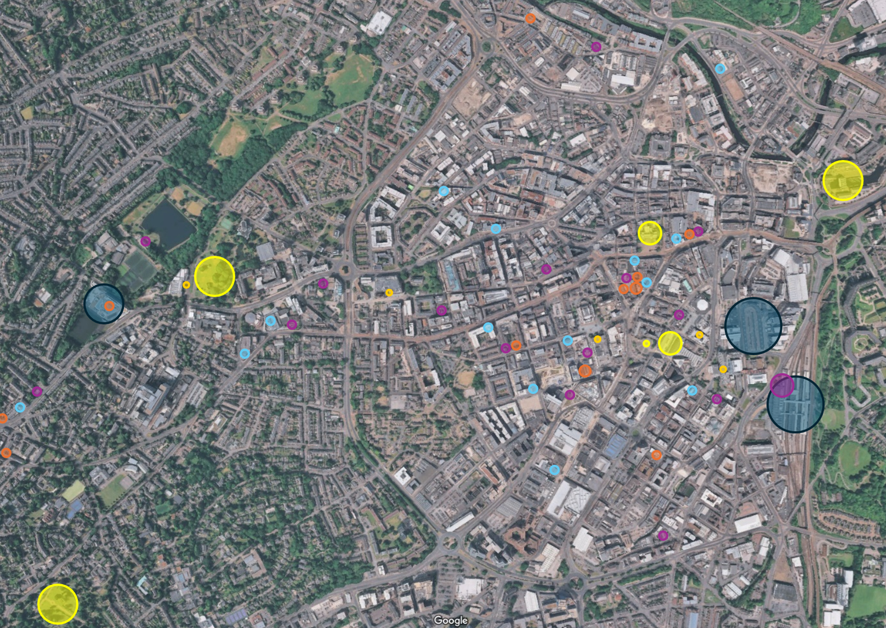
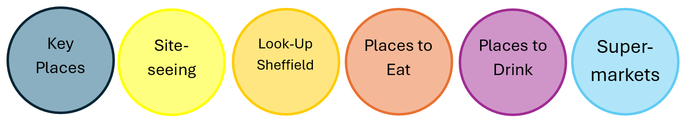
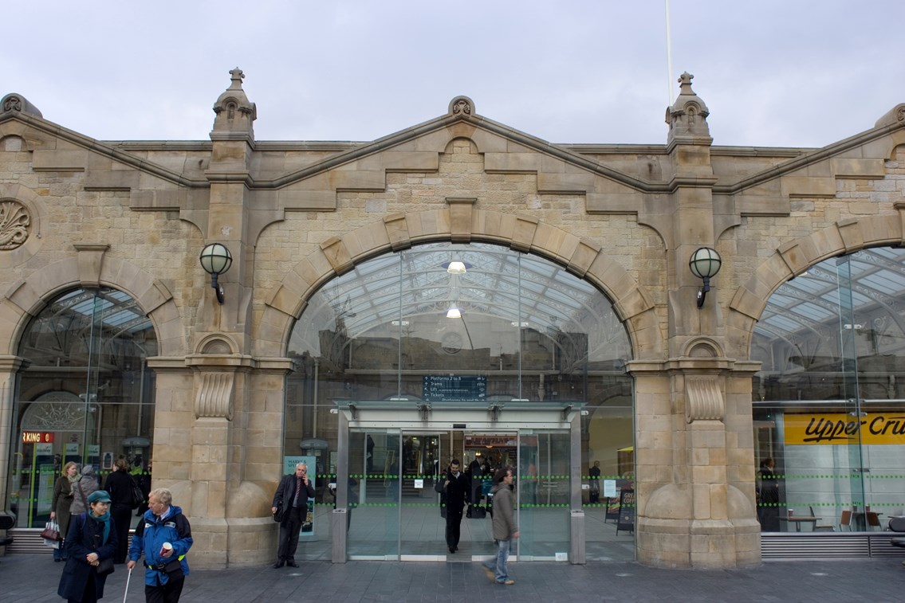
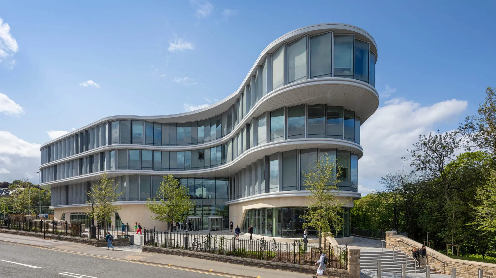
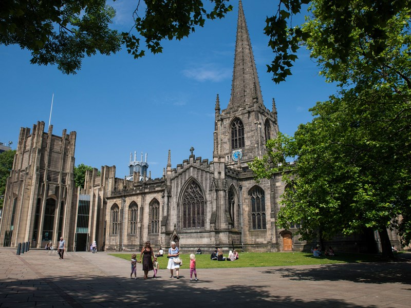
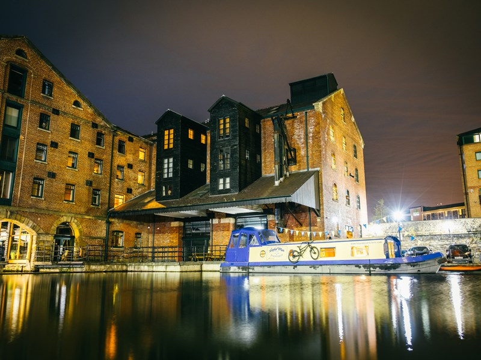
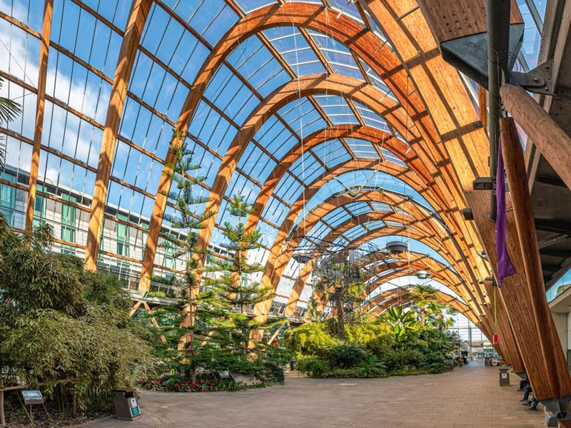
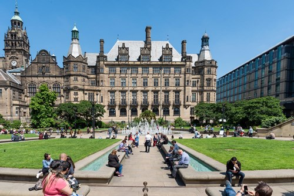
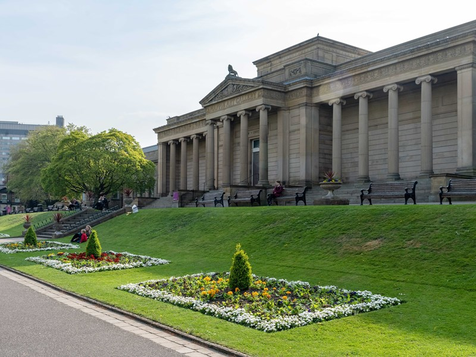
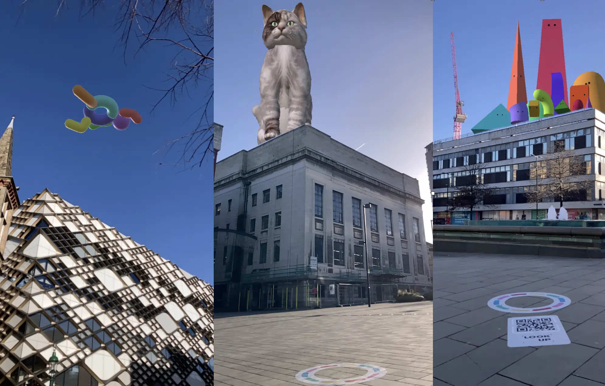

Sheffield

Map Link to heading

Note: most places with an alcohol licence also provide food.
Key Places Link to heading
Train Station Link to heading

Coach Station Link to heading
The Wave Link to heading

Things to See Link to heading
Sheffield Cathedral Link to heading

Victoria Quays Link to heading

The Winter Garden Link to heading

Peace Gardens Link to heading

Weston Park Link to heading

Botanical Gardens Link to heading

Sheffield’s virtual art Link to heading

Supermarkets Link to heading